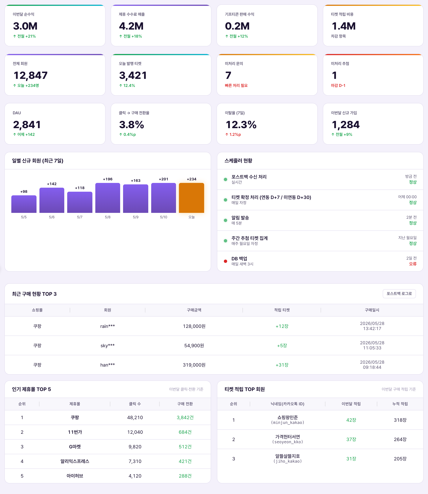

대시보드 = 로그인 직후 가장 먼저 보이는 요약 화면. 매출·회원·티켓·제휴몰 실적을 카드와 표로 한눈에 모아 보여줄 뿐, 이 화면에서 직접 고치는 값은 하나도 없다 — 전부 다른 화면(회원, 정산, 포스트백 로그 등)에서 쌓인 데이터를 읽어와 집계해 보여주는 "요약판"이다. 그래서 이 문서의 표는 "바꾸면 생기는 일"이 아니라 "이 숫자가 어디서 왔고, 비어 있다면 왜 비어 있는지"를 설명한다.Dashboard = màn hình tổng hợp hiển thị đầu tiên ngay sau khi đăng nhập. Nó chỉ gom doanh thu·thành viên·vé·hiệu suất cửa hàng liên kết (제휴몰) vào thẻ và bảng để xem một lượt, không có giá trị nào có thể sửa trực tiếp trên màn này — toàn bộ là "bản tóm tắt" đọc và tổng hợp dữ liệu đã tích lũy từ các màn khác (Thành viên, Quyết toán, Nhật ký Postback...). Vì vậy bảng trong tài liệu này không nói "thay đổi thì xảy ra chuyện gì" mà giải thích "số liệu này đến từ đâu, và nếu trống thì vì sao trống".

| 요소Thành phần | 의미 / 수치Ý nghĩa / Số liệu | 어디서 오는 데이터인가 / 왜 비어 있나Dữ liệu đến từ đâu / Vì sao trống |
|---|---|---|
| 순수익(추정)Lợi nhuận ròng (ước tính) | -2,850,090원 (캡션: 데모 Firestore 집계)-2.850.090 won (chú thích: tổng hợp Firestore demo) | 제휴 수수료 매출 + 기프티콘 판매 마진 − 티켓 적립 비용 계산식의 결과값. 계산식 상세는 수익 분석 문서 참고. 지금 마이너스인 건 데모 데이터가 실제 운영 볼륨을 반영하지 않기 때문(아래 5번 참고)Kết quả của công thức Doanh thu hoa hồng liên kết + Biên lợi nhuận bán Gifticon − Chi phí tích lũy vé. Chi tiết công thức xem tài liệu Phân tích doanh thu. Con số âm hiện tại là vì dữ liệu demo không phản ánh khối lượng vận hành thực tế (xem mục 5 bên dưới) |
| 제휴 수수료 매출Doanh thu hoa hồng liên kết | 50,610원 (캡션: 포스트백 확정 기준)50.610 won (chú thích: theo postback đã xác nhận) | 포스트백 로그에서 "확정" 처리된 구매 건의 제휴 수수료 합계. 확정 전(대기) 건은 포함되지 않음Tổng hoa hồng liên kết của các giao dịch mua đã được xử lý "xác nhận" trong Nhật ký Postback. Các giao dịch chưa xác nhận (đang chờ) không được tính |
| 기프티콘 판매 마진Biên lợi nhuận bán Gifticon | 8,400원 (캡션: 교환 마진)8.400 won (chú thích: biên lợi nhuận đổi) | 회원이 티켓을 기프티콘으로 교환할 때, 회사가 벤더사에 지불하는 원가와 티켓 환산가치 사이의 차익 합계Tổng chênh lệch giữa giá gốc công ty trả cho nhà cung cấp và giá trị quy đổi vé, khi thành viên đổi vé lấy Gifticon |
| 티켓 적립 비용Chi phí tích lũy vé | 2,909,100원 (캡션: 차감 항목)2.909.100 won (chú thích: khoản trừ) | 회원에게 지급 확정된 티켓을 원가(환산가치)로 환산한 합계. 순수익 계산식에서 유일하게 빼는 항목Tổng giá trị quy đổi (theo giá gốc) của vé đã xác nhận cấp cho thành viên. Là khoản duy nhất bị trừ trong công thức lợi nhuận ròng |
| 전체 회원Tổng thành viên | 131명 (캡션: 데모 실데이터)131 người (chú thích: dữ liệu thực demo) | 회원 DB(users 테이블)의 전체 row 개수. 게스트(카카오 미연동) 포함Tổng số dòng trong DB thành viên (bảng users). Bao gồm cả khách (chưa liên kết Kakao) |
| 발행 티켓(누적 적립)Vé đã phát hành (tích lũy lũy kế) | 2,141장 (캡션: 적립 확정 기준)2.141 vé (chú thích: theo tích lũy đã xác nhận) | 등급(브론즈·실버·골드) 티켓으로 확정 전환된 누적 수량. 가지급(확정 대기) 티켓은 미포함Số lượng lũy kế đã chuyển đổi xác nhận thành vé hạng (Đồng·Bạc·Vàng). Không bao gồm vé tạm cấp (đang chờ xác nhận) |
| 미처리 문의Yêu cầu chưa xử lý | 0건 (캡션: pending 상태)0 mục (chú thích: trạng thái pending) | 1:1 문의 중 상태값이 "대기"인 건수. 답변 완료 건은 제외Số mục hỏi đáp 1:1 có trạng thái "chờ". Loại trừ các mục đã trả lời xong |
| 미처리 추첨Rút thăm chưa xử lý | 0건 (캡션: 마감 후 미처리)0 mục (chú thích: chưa xử lý sau khi kết thúc) | 참여 마감일이 지났는데 아직 당첨자를 뽑지 않은 경품 이벤트 건수Số sự kiện quà tặng đã qua hạn tham dự nhưng chưa chọn người trúng thưởng |
| DAU · 전환율 · 이탈율(7일) · 이번달 신규가입DAU · Tỷ lệ chuyển đổi · Tỷ lệ rời bỏ (7 ngày) · Đăng ký mới tháng này | 전부 "—" (캡션: 운영 데이터 없음)Toàn bộ hiện "—" (chú thích: chưa có dữ liệu vận hành) | 이 4개는 실서비스 트래픽을 전제로 계산되는 지표다. 데모 환경엔 애초에 집계할 원본 로그(일별 방문·클릭·탈퇴 이벤트)가 없어서 계산 자체가 발생하지 않는다 — 버그가 아니라 정상적인 빈 상태4 chỉ số này được tính dựa trên tiền đề có lưu lượng dịch vụ thực tế. Môi trường demo ngay từ đầu không có log gốc để tổng hợp (lượt truy cập·click·sự kiện rời bỏ theo ngày) nên việc tính toán không xảy ra — đây là trạng thái trống bình thường, không phải lỗi |
| 일별 신규 회원 (최근 7일) 패널Bảng thành viên mới theo ngày (7 ngày gần nhất) | 빈 그래프 (캡션: 운영 누적 데이터 없음)Biểu đồ trống (chú thích: chưa có dữ liệu tích lũy vận hành) | 시계열(날짜별) 집계는 실서비스 운영 후 매일 배치가 쌓아야 그래프가 생긴다. 데모는 하루치 스냅샷만 있어 시계열을 그릴 수 없음Tổng hợp theo chuỗi thời gian (theo ngày) chỉ hiện biểu đồ khi batch chạy tích lũy hằng ngày sau khi vận hành dịch vụ thực tế. Demo chỉ có snapshot một ngày nên không thể vẽ chuỗi thời gian |
| 스케줄러 현황 패널Bảng trạng thái Scheduler | 빈 목록 (캡션: 실행 이력 없음)Danh sách trống (chú thích: không có lịch sử chạy) | 배치 스케줄러(포스트백 수신, 티켓 확정, 알림 발송 등)가 데모 환경에서는 아직 가동되지 않아 실행 로그 자체가 없음. 실서비스에서는 각 배치의 마지막 실행 시각·다음 실행 예정·정상/오류 상태가 표시될 자리Batch scheduler (nhận postback, xác nhận vé, gửi thông báo v.v.) chưa được vận hành trong môi trường demo nên bản thân log chạy không tồn tại. Ở dịch vụ thực tế, đây là vị trí sẽ hiển thị thời điểm chạy cuối·dự kiến chạy tiếp theo·trạng thái bình thường/lỗi của từng batch |
| 최근 픽구매 현황 TOP 3TOP 3 tình trạng mua Pick gần đây | 쇼핑몰 / 회원 / 구매금액 / 적립 티켓 / 구매일시 표 + "포스트백 로그로" 버튼Bảng Cửa hàng LK / Thành viên / Số tiền mua / Vé tích lũy / Thời gian mua + nút "Đến Nhật ký Postback" | 가장 최근 구매 3건을 시간순으로 보여줌. 버튼을 누르면 포스트백 로그 화면으로 이동해 전체 이력을 확인할 수 있음Hiển thị 3 giao dịch mua gần nhất theo thứ tự thời gian. Nhấn nút sẽ chuyển đến màn Nhật ký Postback để xem toàn bộ lịch sử |
| 인기 제휴몰 TOP 5TOP 5 Cửa hàng liên kết phổ biến | 이번달 클릭·전환 기준. 1위 쿠팡 43건 · 2위 쇼핑몰 32건 · 3위 test 3건 · 4위 11번가 2건 (클릭 수는 전부 "—")Theo click·chuyển đổi tháng này. Hạng 1 Coupang 43 lượt · Hạng 2 쇼핑몰 32 lượt · Hạng 3 test 3 lượt · Hạng 4 11st 2 lượt (số lượt click toàn bộ hiện "—") | |
| "구매 전환" 열은 이번달 포스트백 확정 건수를 제휴몰별로 센 것. "클릭 수" 열이 "—"인 이유는 제휴몰 링크 클릭 자체를 아직 별도 로그로 추적하지 않기 때문 — 집계 로직 미구현, 데이터 삭제/누락 아님Cột "Chuyển đổi mua" là số lượt postback đã xác nhận tháng này tính theo từng cửa hàng LK. Cột "Số lượt click" hiện "—" vì bản thân việc click link cửa hàng LK chưa được theo dõi bằng log riêng — do logic tổng hợp chưa triển khai, không phải do dữ liệu bị xóa/thiếu | ||
| 티켓 적립 TOP 회원TOP thành viên tích lũy vé | 이번달 픽구매 적립 기준. 순위/닉네임·카카오톡ID·식별아이디/이번달 적립/누적 적립. 실제 데모 회원 기준 최상위 1704장/54장/47장 등Theo tích lũy mua Pick tháng này. Hạng/Biệt danh·ID Kakao·ID định danh/Tích lũy tháng này/Tích lũy lũy kế. Theo thành viên demo thực tế, cao nhất là 1704 vé/54 vé/47 vé v.v. | |
그래서 방금 발생한 구매는 대시보드 재무 카드에 바로 반영되지 않는다. 연동 회원은 D+7, 미연동(게스트) 회원은 D+30 뒤 확정 처리를 거쳐야 순수익·수수료 매출·적립 비용에 잡힌다.Vì vậy giao dịch mua vừa xảy ra không phản ánh ngay vào thẻ tài chính của dashboard. Thành viên đã liên kết cần D+7, thành viên chưa liên kết (khách) cần D+30 để qua bước xác nhận rồi mới được tính vào lợi nhuận ròng·doanh thu hoa hồng·chi phí tích lũy.
2단계(트래픽 로그 적재)가 아직 없다 — 데모는 물론이고 실서비스도 이 지표들을 계산하는 파이프라인 자체를 아직 안 만들었다. 그래서 "—"는 데이터가 소실된 게 아니라 파이프라인 착수 전 상태를 뜻한다.Bước 2 (tích lũy log lưu lượng) vẫn chưa tồn tại — không chỉ demo mà cả dịch vụ thực tế cũng chưa xây dựng pipeline tính các chỉ số này. Vì vậy "—" không có nghĩa là dữ liệu bị mất mà là trạng thái chưa bắt đầu xây dựng pipeline.
| 상황Tình huống | 관리자가 하는 일Việc quản trị viên làm | 결과Kết quả |
|---|---|---|
| 아침에 출근해서 전날 실적 확인Đi làm buổi sáng, kiểm tra hiệu suất hôm trước | 대시보드만 한 번 열어봄 (다른 화면 이동 불필요)Chỉ mở dashboard một lần (không cần chuyển màn khác) | 순수익·회원·티켓·미처리 문의/추첨 숫자를 30초 안에 파악. 이상 징후 있으면 해당 화면으로 드릴다운Nắm được lợi nhuận ròng·thành viên·vé·số yêu cầu/rút thăm chưa xử lý trong 30 giây. Nếu có bất thường thì đi sâu vào màn tương ứng |
| 순수익이 마이너스로 보임Thấy lợi nhuận ròng âm | 수익 분석 화면에서 3개 구성 항목(수수료 매출·기프티콘 마진·적립 비용)을 각각 확인Kiểm tra từng mục cấu thành trong 3 mục (doanh thu hoa hồng·biên Gifticon·chi phí tích lũy) tại màn Phân tích doanh thu | 데모에서는 정상 — 실제 거래량이 적어 적립 비용이 수수료 매출을 웃도는 구조. 실서비스 운영 후 볼륨이 늘면 자연히 역전됨Ở demo thì bình thường — do khối lượng giao dịch thực còn ít nên chi phí tích lũy vượt doanh thu hoa hồng. Sau khi vận hành dịch vụ thực tế và khối lượng tăng sẽ tự nhiên đảo ngược |
| 미처리 문의/추첨이 0이 아니게 됨Yêu cầu/rút thăm chưa xử lý khác 0 | 카드 숫자만 보고도 대응 필요 여부 판단 → 각 전용 화면(문의 관리, 추첨 관리)으로 이동해 처리Chỉ nhìn số trên thẻ đã biết cần xử lý hay không → chuyển đến màn chuyên dụng (Quản lý yêu cầu, Quản lý rút thăm) để xử lý | 처리 완료하면 다음 새로고침 시 대시보드 숫자도 같이 줄어듦(실시간 재계산, 별도 저장 없음)Khi xử lý xong, số trên dashboard cũng giảm theo ở lần tải lại tiếp theo (tính toán lại theo thời gian thực, không lưu riêng) |
| 인기 제휴몰 순위가 이상함 (test가 3위)Thứ hạng cửa hàng LK phổ biến bất thường (test đứng hạng 3) | 그대로 둠 — 데모 계정 테스트 트래픽이 섞여 있는 것. 운영 정식 오픈 전 데모 계정 정리 필요성만 메모Giữ nguyên — do lưu lượng test của tài khoản demo bị trộn lẫn. Chỉ ghi chú cần dọn tài khoản demo trước khi vận hành chính thức | 실서비스 오픈 시 데모 계정·테스트 클릭 데이터를 제외하는 필터링이 필요(확정 대기)Khi mở dịch vụ thực tế cần lọc loại trừ dữ liệu tài khoản demo·click test (đang chờ xác nhận) |
이 화면은 Firestore에 연결된 실제 데모 환경이지만, 담긴 데이터는 전부 합성/테스트 데이터다. 회원 131명은 실제로 DB에 존재하는 row지만 실사용자가 아니고, DAU·전환율 같은 성장 지표는 애초에 계산 파이프라인이 없어 진짜 사용자 행동을 반영하지 않는다. 순수익 마이너스도 같은 이유 — 소량의 테스트 구매 대비 적립 비용이 상대적으로 크게 잡히는 구조적 결과일 뿐, 사업성 신호로 해석하면 안 된다.Màn hình này là môi trường demo thực tế đã kết nối Firestore, nhưng dữ liệu chứa trong đó toàn bộ là dữ liệu tổng hợp/test. 131 thành viên là các dòng thực sự tồn tại trong DB nhưng không phải người dùng thực, các chỉ số tăng trưởng như DAU·tỷ lệ chuyển đổi ngay từ đầu không có pipeline tính toán nên không phản ánh hành vi người dùng thật. Lợi nhuận ròng âm cũng cùng lý do — chỉ là kết quả cấu trúc khi chi phí tích lũy tương đối lớn so với lượng nhỏ giao dịch test, không nên diễn giải đây là tín hiệu về tính khả thi kinh doanh.
한 가지 확실한 신호는 있다 — 라이브 데모 사이드바에서 "대시보드" 메뉴 옆에 확정 배지가 붙어 있다는 점. 이는 형제 화면들과 달리 이 화면의 카드 구성·레이아웃 설계는 이미 잠겼다(locked)는 뜻이다. 즉 지금 문서화한 카드 종류·표 구조는 바뀔 가능성이 낮고, 앞으로 남은 일은 "빈 카드를 채울 실데이터 파이프라인(트래픽 로그·시계열 배치·스케줄러 가동)을 붙이는 것"뿐이다.Có một tín hiệu chắc chắn — trên sidebar demo trực tiếp, cạnh menu "Bảng điều khiển" có gắn nhãn Đã chốt. Điều này có nghĩa khác với các màn anh em khác, thiết kế cấu trúc thẻ·bố cục của màn này đã được khóa (locked). Tức là loại thẻ·cấu trúc bảng đã được tài liệu hóa hiện tại ít khả năng thay đổi, việc còn lại chỉ là "gắn pipeline dữ liệu thực (log lưu lượng·batch chuỗi thời gian·vận hành scheduler) để lấp đầy các thẻ đang trống".